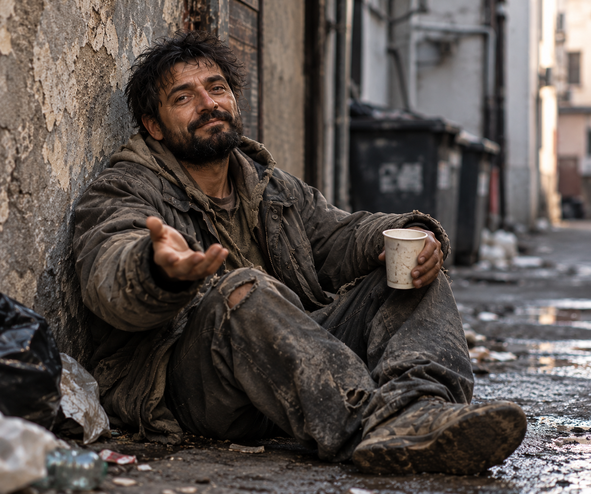

«Раньше я просил мелочь. Теперь я прошу инвестиции в личный бренд».
До Golden Gipsy Артём жил скромно: сидел у стены, пил кофе из бумажного стакана и ждал, когда жизнь наконец предложит ему тариф «Бизнес».
За три недели он научился говорить «масштаб» с таким выражением лица, будто уже владеет половиной побережья. Теперь у него есть костюм, автомобиль и главное — презентация на 87 слайдов.
Артемий Аркадевич Выпускник потока «Золотой старт»